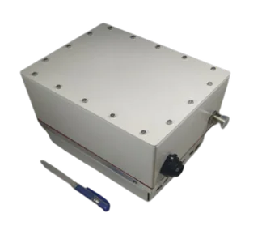
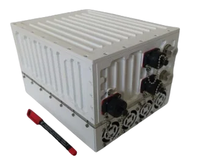
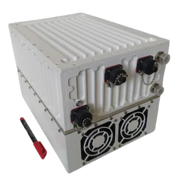
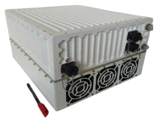
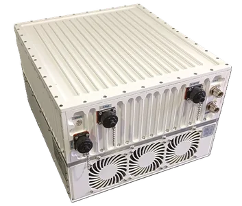
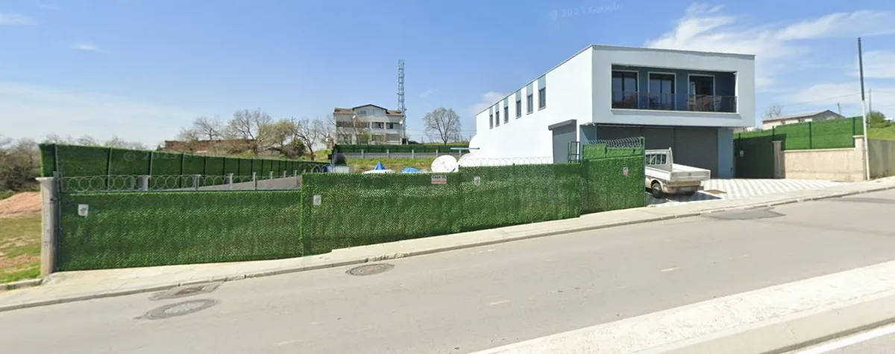
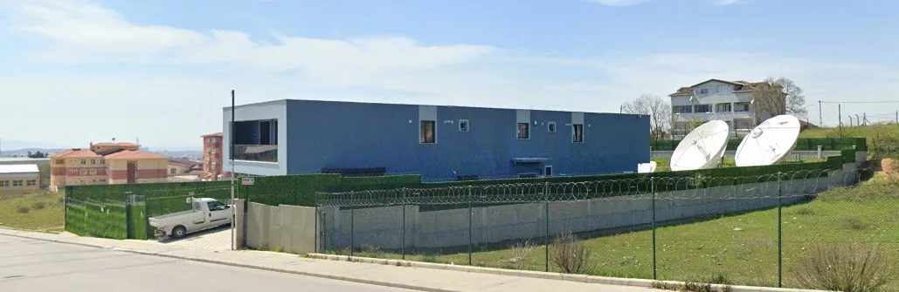

Gansat Teknoloji olarak, GaN teknolojisi tabanlı 20W–400W Ku-Band BUC/SSPA modellerimizi Türkiye'de tasarlıyor ve üretiyoruz; uydu haberleşme sektörüne yüksek performanslı, güvenilir ve yerli çözümler sunuyoruz.
VSAT · TV Yayıncılığı · İnternet · Taşınabilir Uygulamalar





Teknik bilgi, veri sayfası veya fiyat teklifi için satış ekibimizle iletişime geçin. → Teklif İsteyin
Yurt içinde üretilen SSPA teknolojisiyle ithalat bağımlılığını azaltıyor, Türkiye'nin teknolojik bağımsızlığına katkı sağlıyoruz.
Gallium Nitride tabanlı tasarımlarımız; düşük güç tüketimi, yüksek güvenilirlik ve uzun ürün ömrü sunuyor.
Taşınabilir sistemlerden büyük ölçekli altyapılara kadar her ihtiyaca uygun model sunuyoruz.
Uzman mühendis ekibimiz satış öncesi ve sonrası teknik destek sunuyor. Yerli üretimin avantajıyla hızlı teslimat sağlıyoruz.
Gansat Teknoloji olarak, Türkiye'de bir ilki gerçekleştiriyor ve yerli SSPA (Solid State Power Amplifier) üretimini başarıyla sürdürüyoruz. 20W'dan 400W'a uzanan Ku-Band BUC/SSPA modellerimizle sektöre yüksek performanslı, yerli teknoloji çözümleri sunuyor; ithalat bağımlılığını azaltarak Türkiye'nin teknolojik bağımsızlığına katkı sağlıyoruz.
GaN teknolojisi tabanlı ürünlerimiz; yüksek verim, düşük güç tüketimi ve uzun ömürlü güvenilirlik sunuyor. Güçlü mühendislik altyapımızla teknolojiyi geliştirmeye, hizmet ağımızı genişletmeye ve sektöre katma değer üretmeye devam ediyoruz.


Tepeören Mah. Demokrasi Caddesi No: 153/1
34959 Tuzla / İstanbul
Standartlar & Uyumluluk